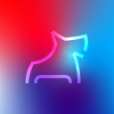

Carnegie Mellon University Computer Science Department
Teaching Assistant
May 2026 – Present
Pittsburgh, PA
Taught C systems programming (malloc, caches, concurrency, networking) to grad/undergrad students.
Led weekly recitations and code reviews; designed/graded exams and held office hours.
Carnegie Mellon University Safe AI Lab
Research Assistant
Feb 2026 – Present
Pittsburgh, PA
Contribute to real-time data collection stack for dexterous robot manipulation.
Improved gesture-based state machine and hand capture via Apple Vision Pro landmarks.
Collected 125+ hours of hand demos (pouring, cutting, folding, tool use).

ScottyLabs @ Carnegie Mellon University
React Web Developer
Sept 2025 – Present
Pittsburgh, PA
Contribute to star ratings and reviews for
CMUEats.com
(10,000+ monthly users).
Developed sorting by location, rating, and hours; used React Query for optimistic updates and caching.
The University of Texas at Dallas
Research Intern
June 2022 – Aug 2024
Dallas, TX
Conducted ML research across two labs; presented weekly to faculty and contributed to papers.
Built an autonomous driving agent (VAE, imitation learning, SAC); +68% distance traveled with better lane adherence.
Trained MLP, CNN, and LSTM models to predict battery life and degradation across temperatures.
Stanford University
Summer Intern
Aug 2024 – Aug 2024
Stanford, CA
Invited to lectures on robotics, computer vision, biomedical engineering, and entrepreneurship.
Led a team of 5 to prototype and pitch a mobile app to promote exercise accuracy using pose estimation.
Dr. Meng's Coding Camp
Teaching Assistant
Jun 2022 – Aug 2024
Dallas, TX
Taught lectures, hosted office hours, and graded homework for 100+ students in grades 6 – 10 on data structures,
algorithms, and programming using the Raspberry Pi.